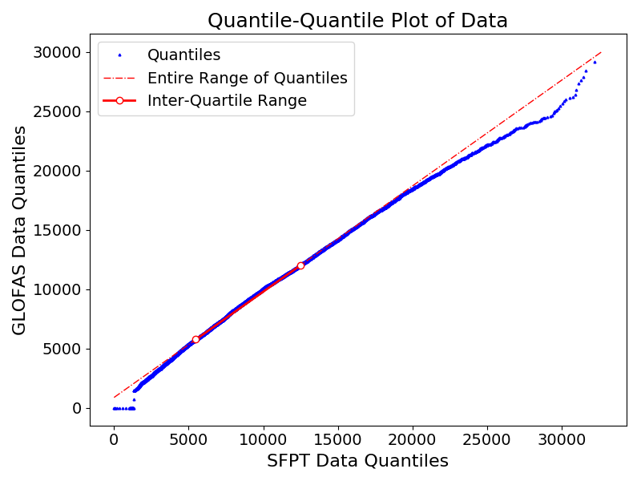

qqplot¶
-
hydrostats.visual.qqplot(merged_data_df=None, sim_array=None, obs_array=None, interpolate='linear', title=None, xlabel='Simulated Data Quantiles', ylabel='Observed Data Quantiles', legend=False, replace_nan=None, replace_inf=None, remove_neg=False, remove_zero=False, figsize=(12, 8))¶ Plots a Quantile-Quantile plot of the simulated and observed data.
Useful for comparing to see whether the two datasets come from the same distribution.
Parameters: - merged_data_df: DataFrame
Dataframe must contain a datetime type index and floating point type numbers in two columns. The left column must be simulated data and the right column must be observed data. If given, sim_array and obs_array must be None.
- sim_array: 1D ndarray
Array of simulated data. If given, merged_data_df parameter must be None and obs_array must be given.
- obs_array: 1D ndarray
Array of observed data. If given, merged_data_df parameter must be None and sim_array must be given.
- interpolate: str
Specifies the interpolation type when computing quantiles.
- title: str
If given, sets the title of the plot.
- xlabel: str
The label for the x axis that holds the simulated data quantiles.
- ylabel: str
The label for the y axis that holds the observed data quantiles.
- legend: bool
If True, a legend to explain the elements on the plot will be added.
- replace_nan: float, optional
If given, indicates which value to replace NaN values with in the two arrays. If None, when a NaN value is found at the i-th position in the observed OR simulated array, the i-th value of the observed and simulated array are removed before the computation.
- replace_inf: float, optional
If given, indicates which value to replace Inf values with in the two arrays. If None, when an inf value is found at the i-th position in the observed OR simulated array, the i-th value of the observed and simulated array are removed before the computation.
- remove_neg: boolean, optional
If True, when a negative value is found at the i-th position in the observed OR simulated array, the i-th value of the observed AND simulated array are removed before the computation.
- remove_zero: boolean, optional
If true, when a zero value is found at the i-th position in the observed OR simulated array, the i-th value of the observed AND simulated array are removed before the computation.
- figsize: tuple of float
Tuple of length two that specifies the horizontal and vertical lengths of the plot in inches, respectively.
Returns: - fig : Matplotlib figure instance
A matplotlib figure handle is returned, which can be viewed with the matplotlib.pyplot.show() command.
Examples
>>> import hydrostats.data as hd >>> import hydrostats.visual as hv >>> import matplotlib.pyplot as plt
>>> sfpt_url = r'https://github.com/waderoberts123/Hydrostats/raw/master/Sample_data/sfpt_data/magdalena-calamar_interim_data.csv' >>> glofas_url = r'https://github.com/waderoberts123/Hydrostats/raw/master/Sample_data/GLOFAS_Data/magdalena-calamar_ECMWF_data.csv' >>> merged_df = hd.merge_data(sfpt_url, glofas_url, column_names=('SFPT', 'GLOFAS'))
>>> qqplot(merged_data_df=merged_df, title='Quantile-Quantile Plot of Data', >>> xlabel='SFPT Data Quantiles', ylabel='GLOFAS Data Quantiles', legend=True, >>> figsize=(8, 6)) >>> plt.show()